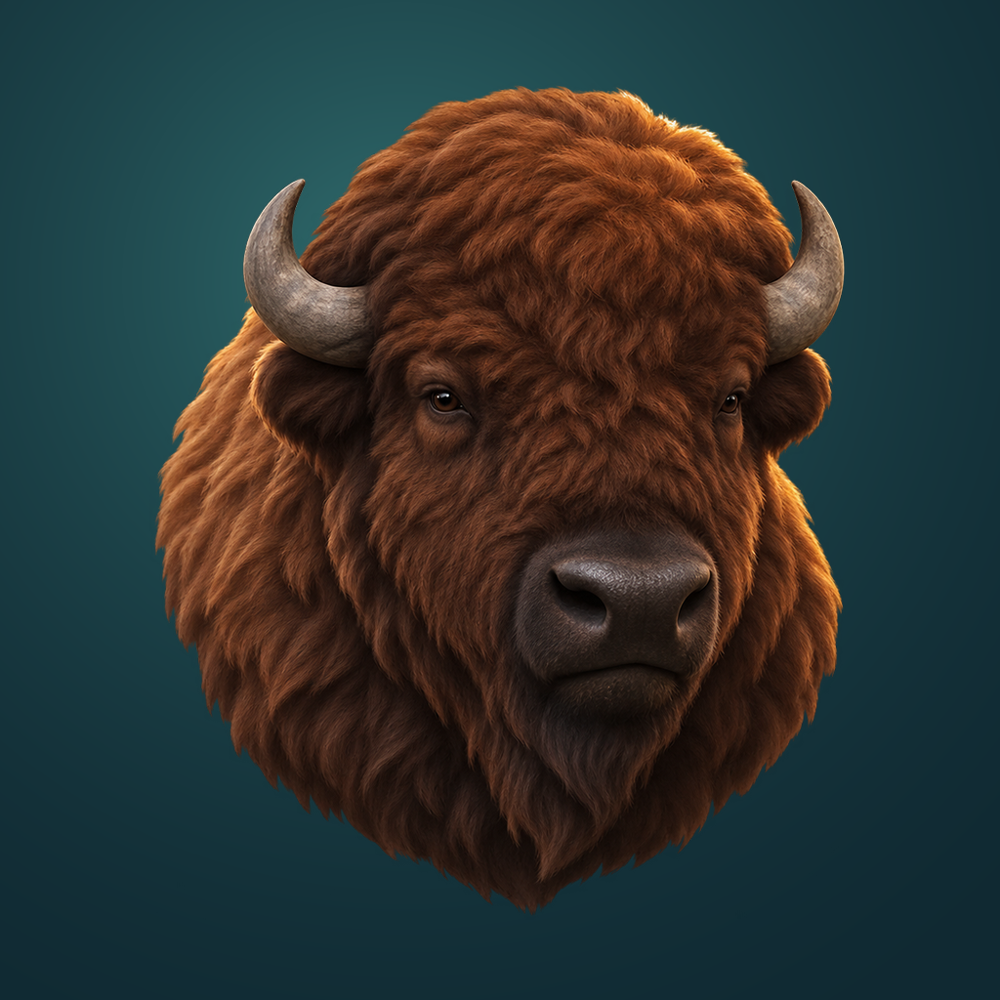

Find your rhythm
Change lanes, jump low hazards and charge through fragile barriers as the trail gets faster.
A little adventure, wherever you are
We make games for a small escape and one more try. Our current adventure follows an American bison through a changing countryside, with calves to rescue along the way.
Meet Buffalo Run
On the trail
Android · Internal testing
A three-lane running adventure through farms, forests, caves, mountains and sandy shores. Find a path through obstacles, take a ramp and bring a calf back to safety.
Change lanes, jump low hazards and charge through fragile barriers as the trail gets faster.
Travel across 17 regions, with changing scenery, weather and rescue opportunities.
Preview natural and elemental coats, horn finishes, armor, hoof accents and running trails.
Buffalo Run is being prepared for internal testing. Public store availability will be announced here.
A direct line
For a game question, feedback or a privacy request, contact MD. For a bug, include the game version and your device model.